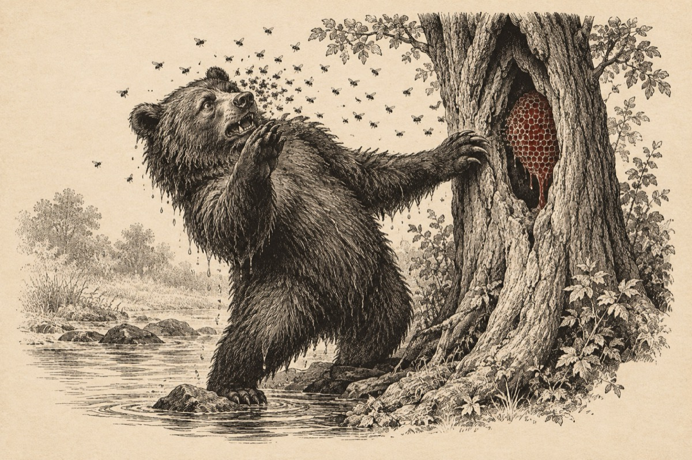

Mor mor mor de foame
Vine ursul de la râu
Amărât și abătut
Umezit până la brău
Astăzi succes n-a avut.
Are-o foame ca de lup
Pește n-a găsit în apă
Încărcat tot de năduf
Alt vânat vrea sa înceapă.
De la faptă pân'la vorbă
Iată-a apărut în drum
Un copac cu scorbură
Lângă el un ciot cu fum
În scorbură ce să fie
A-nceput botul să-și lingă
Un roi mare de albine
Și miere cât să-i ajungă.
Când lăbuța și-a băgat
Să ia fagurele cu miere
Albinele l-au luat la înțepat
Si-apoi să te ții mai nene!
Mor, mor, mor și nu mai pot
Și se dă de-a tumba, fuge
Roiul s-a mutat pe bot
Fuge-acum de nici glonțul nu-l ajunge.
Vasile Groza
Apare și în: Poezii cu animale.